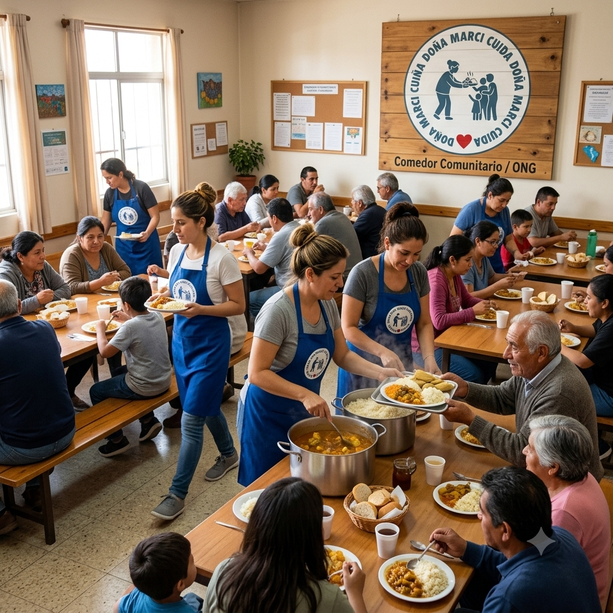
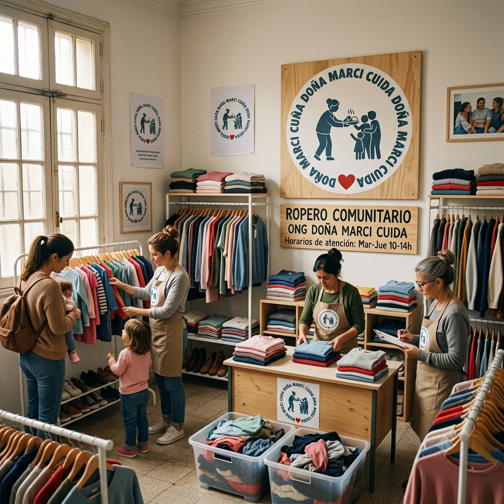
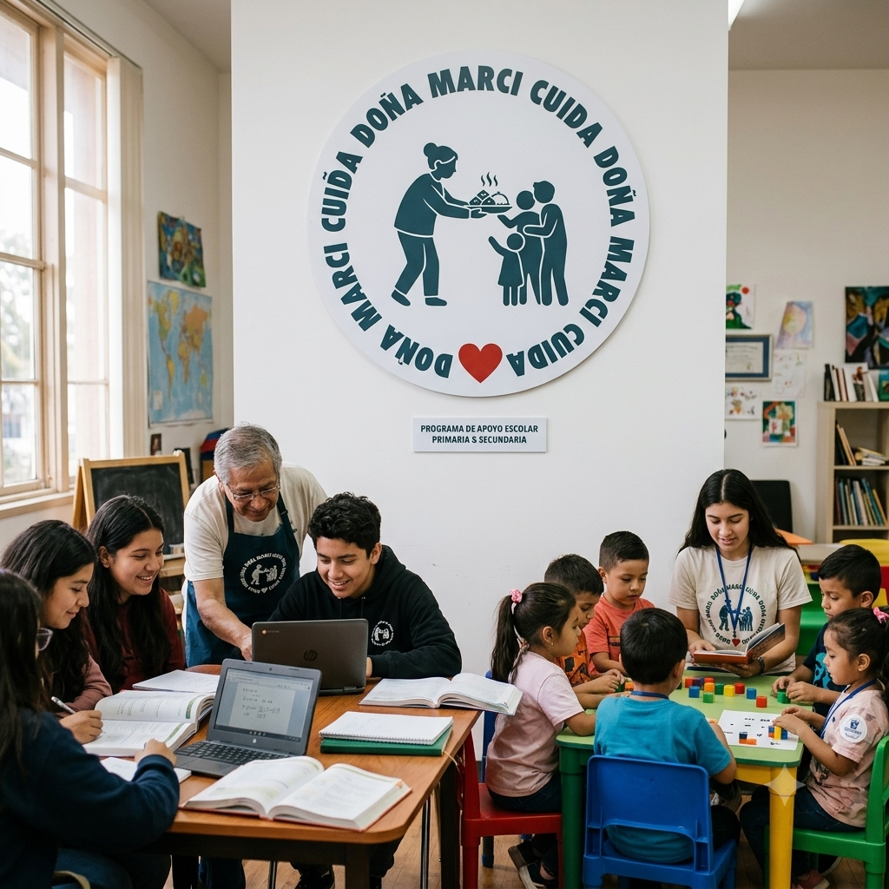

Nuestros Programas
Conocé todas las formas en que trabajamos POR y PARA la comunidad

🍜Comedores Doña Marci Cuida🍜
La organización cuenta actualmente con una red activa de más de 20 comedores distribuidos a lo largo de todo el país, lo que permite brindar asistencia alimentaria diaria a más de 15 familias en cada uno de estos espacios. Estos comedores no solo ofrecen alimentos nutritivos, sino que también funcionan como puntos de encuentro comunitario donde se promueve la contención social y el acompañamiento a personas en situación de vulnerabilidad. El funcionamiento sostenido de esta red es posible gracias al compromiso de diversas instituciones colaboradoras, así como a las donaciones constantes de particulares. Entre las ubicaciones donde la ONG desarrolla sus actividades se encuentran Buenos Aires, La Plata, Mar del Plata, Bahía Blanca, Córdoba, Villa María, Rosario, Santa Fe, Paraná, Mendoza, San Rafael, San Juan, San Luis, Salta, San Salvador de Jujuy, Tucumán, Santiago del Estero, Neuquén, Bariloche y Comodoro Rivadavia. Además, se llevan a cabo campañas periódicas de recolección de alimentos y otros insumos esenciales para garantizar la continuidad del servicio. La organización invita a quienes deseen colaborar a sumarse como voluntarios o realizar donaciones a través de los canales disponibles en su página de contacto.
Lista de Ubicaciones
- 📍Calle Rivadavia 123, Buenos Aires.
- 📍Calle Av. 44 1127, La Plata
- 📍Calle San Luis 1777, Mar de Plata
- 📍Calle Vieytes 680, Bahía Blanca
- 📍Calle San Lorenzo 120, Córdoba
- 📍Calle San Juan, Villa María, Cordoba
- 📍Calle Zuviria 6376, Rosario
- 📍Calle Javier de la Rosa 3085, Santa Fe
- 📍Calle Tomas de Rocamora 664, Paraná
- 📍Calle Juan Agustin Maza 75, Mendoza

👕Ropero Comunitario DMC👚
La organización también cuenta con un Ropero Comunitario destinado a brindar acceso gratuito a prendas de vestir para personas que lo necesiten. Este espacio está pensado para acompañar a familias en situación de vulnerabilidad, ofreciendo ropa en buen estado para adultos, jóvenes y niños, adaptándose a distintas edades y necesidades. El ropero funciona como un complemento fundamental de los comedores, promoviendo no solo la asistencia básica, sino también la dignidad y el bienestar de quienes se acercan. Gracias a las donaciones de la comunidad, el espacio se mantiene activo durante todo el año. Sin embargo, es importante que las prendas donadas cumplan con ciertos requisitos para asegurar su correcta utilización: no deben estar agujereadas ni manchadas, deben presentar estampas sobrias o neutras, y encontrarse limpias, secas y sin olores. Estas condiciones permiten que la ropa pueda ser entregada directamente a quienes la necesiten, sin necesidad de procesos adicionales. Quienes deseen colaborar pueden acercar sus donaciones o comunicarse a través de las vías disponibles en la sección de contacto de la página, contribuyendo así a seguir ampliando el alcance de esta iniciativa solidaria.

📚Apoyo Escolar DMC📚
La organización ofrece un programa de apoyo escolar destinado a niños y adolescentes que se encuentren cursando la educación primaria y secundaria, con el objetivo de acompañar sus trayectorias educativas y fortalecer su aprendizaje. Este espacio busca brindar herramientas que permitan mejorar el rendimiento académico, reforzar contenidos y fomentar hábitos de estudio en un entorno de contención y acompañamiento. Las clases de apoyo se desarrollan de manera grupal y personalizada, adaptándose a las necesidades de cada estudiante. Se brinda asistencia en materias clave como Matemáticas, Lengua, Geografía, Ciencias Sociales, Ciencias Naturales, Inglés e Historia, cubriendo así las áreas fundamentales del desarrollo educativo. Además, el programa promueve la participación activa, el pensamiento crítico y la confianza en las capacidades de cada alumno. El equipo está conformado por voluntarios comprometidos con la educación, quienes dedican su tiempo a acompañar a los estudiantes en sus tareas escolares, preparación de exámenes y resolución de dudas. Este servicio es completamente gratuito y forma parte del compromiso de la organización con la igualdad de oportunidades. Para más información o inscripciones, se puede acceder a la sección de contacto en la página.
Materias
- 📕Matemáticas
- 📗Lengua
- 📘Geografía
- 📙Ciencias Sociales
- 📕Ciencias Naturales
- 📗Inglés
- 📘Historia